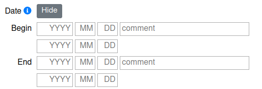

Date
CIDOC based OpenAtlas shortcuts: OA8 (begins in) and OA9 (ends in)
Date fields are initially hidden. Click Show next to the Date label to open them; click Hide to close them again. If an entity already has dates or the form contains a date error, the date section opens automatically. The form also selects Advanced when the stored dates cannot be represented by the simple fields or when there is a date error.
There are two date-entry views:

The screenshot shows the earlier four-row layout. In the current form, choose between Simple and Advanced after opening the date fields.
Simple and Advanced views
In Simple, enter one date for Begin and one for End. In Advanced, each of those dates has two independent bounds:
Begin — Earliest / Latest bounds the uncertain date on which an event began.
End — Earliest / Latest bounds the uncertain date on which it ended.
These are bounds for the beginning and ending dates, not a way to say that a process (such as destruction) lasted for the entire interval. Either bound may be left empty when that limit is unknown. Find detailed examples here: Time Spans.
Simple dates and precision
In Simple, an entered date represents the whole period at that precision; the system fills both bounds for the date:
Entering year 800 gives 800-01-01 through 800-12-31.
Entering year 800 and month 05 gives 800-05-01 through 800-05-31.
Entering 800-05-17 gives that whole calendar day.
Thus, entering a year or month in Simple does create a full year or month interval for that Begin or End date.
To record an exact calendar day, enter the full date in Simple. In Advanced, enter the same full date in both bounds of the relevant pair—for example, in both Begin Earliest and Begin Latest for an exact beginning date. A date without a specific time covers the whole day, not a single instant. For a birth date, for example, enter 1356-12-23 as the Begin date in Simple.
Advanced bounds and open dates
In Advanced, each bound is completed only toward its own side. An Earliest value is completed to the earliest day at that precision (for example, year 800 becomes 800-01-01); a Latest value is completed to the latest day (year 800 becomes 800-12-31). The opposite bound remains empty unless you enter it. Therefore, a single Begin Earliest value of 800 is an open lower bound, not a date covering the whole year. Enter 800 in both Begin Earliest and Begin Latest to bound the beginning date to that year. By contrast, entering 800 in the Simple Begin field sets both bounds for the whole year automatically.
Either side can be open:
Latest only gives an upper limit: for example, Begin Latest means the beginning occurred by that date at the latest; End Latest means the ending occurred by then. The displayed date uses by ….
Earliest only gives a lower limit: for example, Begin Earliest means the beginning occurred on or after that date; End Earliest means the ending occurred on or after then. The displayed date uses from ….
With both bounds set, the display gives the date or interval (for example, between … and …). Both limits are inclusive.
If an Advanced date cannot be represented by a single Simple date, switching to Simple does not discard it. The corresponding Simple date fields are disabled and a message offers Edit in advanced view; return to Advanced to edit the stored bounds.
The preview below each date pair updates as you enter values. It shows the interpreted date, full year or month, open bound, or interval, and reports invalid dates or ordering errors. Invalid fields are highlighted, and an invalid date prevents the form from being submitted.
Input values and validation
Year: -4713 to 9999, but not zero. Negative years represent BC dates; there is no year zero.
Month: 1 to 12.
Day: 1 to 31, subject to the valid number of days in the selected month and year (including leap years).
Comment: add additional information for the Begin or End date.
The YYYY, MM and DD placeholders illustrate the date parts; they do not require four- or two-digit input. A year is required for every populated date bound, and a month is required when entering a day. If time fields are available, a minute requires an hour and a second requires a minute. The earliest bound must not be later than its corresponding latest bound, and the Begin date must not be later than the End date.
Time fields
Hour, minute and second fields appear in Advanced when the time module is activated in the Profile or when time information already exists for the entity. Empty time fields are completed according to the bound: an Earliest bound fills omitted parts with 00 (defaulting to 00:00:00, 12:00:00 for hour 12, or 12:30:00 for 12:30), while a Latest bound fills an omitted hour with 23 and omitted minutes and seconds with 59 (defaulting to 23:59:59, 12:59:59 for hour 12, or 12:30:59 for 12:30).
Background
Dates are validated, including calendar validity and leap years. The system uses the Proleptic Gregorian calendar. There is no year zero: one year before year 1 is year 1 BC. Dates before 4713 BC cannot be recorded.